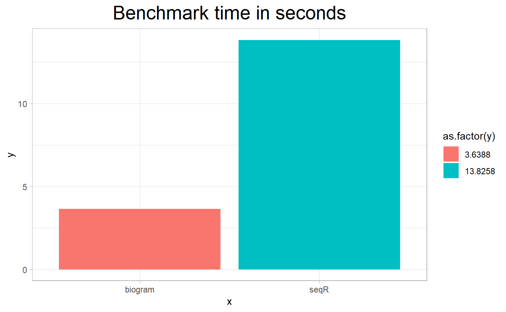

vignette.Rmdvignette: > % % % —
Fast k-mer counting is crucial in working with peptides sequences. It may take part in building features for machine learning models for peptides prediction or as a part of sequence comparison software. SeqR provides fast k-mer counting implementation in R written with Rcpp.
Current version is available on Github, it can be build on Windows, Linux and Mac OS. For package installation from R Console the package is needed. To install seqR and load it to R session the following instructions have to be executed.
Algorithm of seqR is based on hash table that counts occurrences of each k-mer in the sequence. The vector of elements is changed to integer representation for calculation of hash function and faster code execution. K-mers can be counted within specified alphabet, elements from outside of the alphabet are not counted. Implementation also allows to count gapped k-mers. Original code was written in C++ and ported to R with Rcpp library.
To compare performance with other software doing k-mer counting we chose “kmer” and “biogram” packages as reference. To evaluate performance library microbenchmark was used
# devtools.install("michbur/biogram")
# install.packages("microbenchmark")
library(microbenchmark)
m <- matrix(rep(c("a", "b", "c", "d", "e", "f", "g", "h", "i", "aaa", "a", "a"), 5000), nrow=5000)
kmer=count_kmers(m, c(1,2,0), c("a", "b", "c", "d", "e", "aaa"), pos=FALSE),
bio=biogram::count_ngrams(m, n=4, u=c("a", "b", "c", "d", "e", "aaa"), d=c(1,2,0), pos=FALSE)library(ggplot2)
results <- c(13.8258, 3.6388)
ggplot(data = data.frame(y = results, x = c('seqR', 'biogram')), aes(x,y, fill = as.factor(y))) + geom_col() + theme_light() + ggtitle('Benchmark time in seconds') +
theme(plot.title = element_text(size = 20, hjust = 0.5))